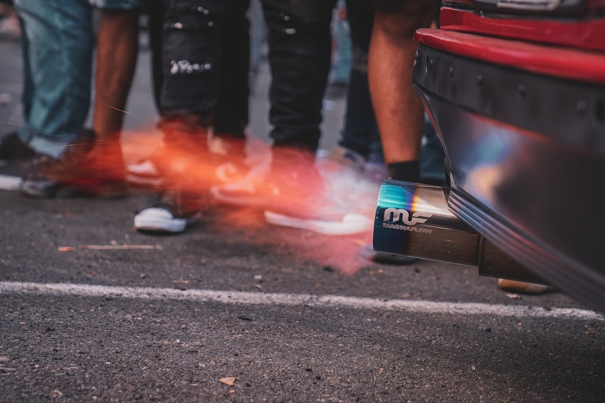
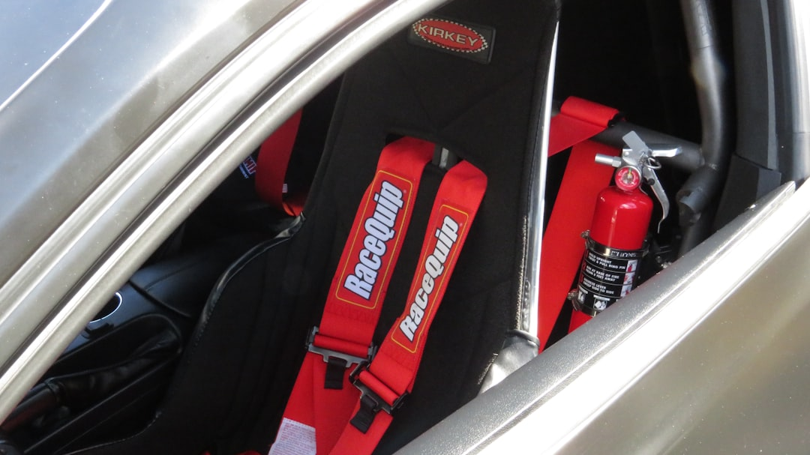
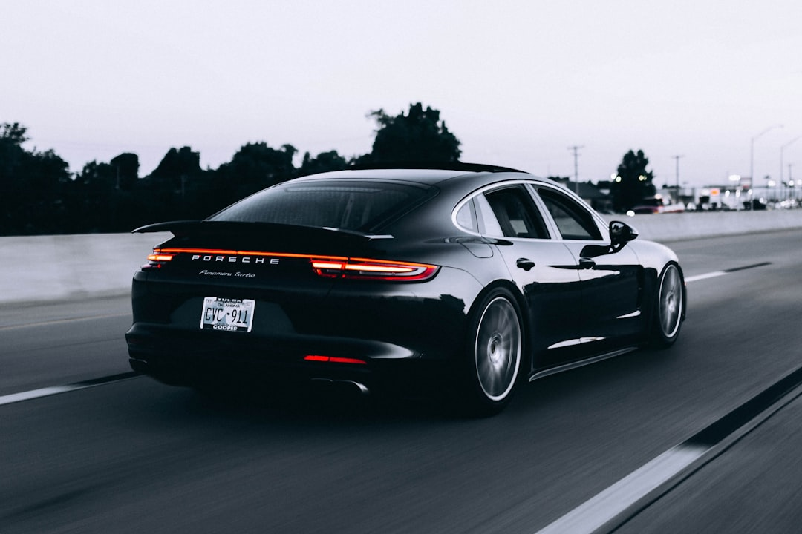

A fire extinguisher mount for car use provides a dedicated solution for drivers who want to carry an extinguisher securely inside their vehicle. While purchasing a suitable extinguisher is an important part of vehicle preparedness, consideration should also be given to how that extinguisher will be stored. F4Fabrication develops car fire extinguisher brackets intended to provide secure mounting, appropriate positioning, and vehicle-specific fitment.
A dedicated bracket can be suitable for many vehicle categories. Track cars and race-inspired road vehicles are obvious examples because drivers often install additional equipment for performance use. However, fire extinguisher mounting can also be appropriate for daily drivers, classic vehicles, sports cars, modified vehicles, trucks, off-road builds, and EVs.

Accessibility also deserves consideration. A fire extinguisher may be difficult to access quickly when it is stored deep inside a trunk or underneath other equipment. A seat rail fire extinguisher mount for car interiors can position the extinguisher in a more predictable location. The exact installation should always account for seat movement, passenger comfort, interior clearance, and the specific layout of the vehicle.
F4Fabrication uses sturdy metal construction for its vehicle mounting solutions. A car fire extinguisher mount needs sufficient rigidity because the bracket must support the extinguisher while the vehicle is moving. A secure mounting system should remain stable through normal braking, acceleration, and cornering while keeping the extinguisher in its intended position.
When selecting a fire extinguisher mount for car use, buyers should consider construction, installation method, vehicle compatibility, extinguisher compatibility, accessibility, and positioning. A well-designed mounting system combines these factors into an organized installation that fits naturally within the vehicle.
Classic car owners may have additional reasons to select a no-drill car fire extinguisher mount. Maintaining original interior panels, carpets, floors, and structural components can be an important part of preserving a classic vehicle. A mounting bracket designed around existing mounting locations provides an alternative to creating permanent holes solely for an extinguisher installation.
Whether the intended application is a track car, sports car, daily driver, classic, modified vehicle, truck, EV, or off-road build, a dedicated fire extinguisher mount for car use can provide a secure and organized installation. F4Fabrication offers purpose-built solutions designed to make the extinguisher a properly mounted component of the vehicle.
The manufacturing process is another consideration when evaluating a fire extinguisher mount for car use. F4Fabrication develops brackets using CAD design and precision manufacturing methods. Accurate design allows mounting points, dimensions, bends, and clearances to be planned around the intended vehicle. The resulting fire extinguisher bracket can then provide a structured mounting platform for the extinguisher and its associated holder.

Accessibility should also influence bracket selection. A securely mounted extinguisher provides limited practical value if it is extremely difficult to reach. Seat rail mounting can offer a convenient compromise between security and accessibility, depending on the vehicle. The chosen position should also avoid interfering with seat operation, controls, passengers, and other interior components.
An extinguisher that is placed loosely inside a vehicle can move during braking, acceleration, cornering, or travel over uneven roads. Storage inside the trunk may keep it away from occupants, but it can also reduce accessibility, particularly when luggage or other equipment is present. Installing a dedicated fire extinguisher mount for car interiors establishes a permanent and predictable mounting location.
F4Fabrication also supports applications beyond its existing product range through custom bracket requests. This can be useful for less common vehicles or configurations where a standard vehicle-specific product is not currently offered. A custom approach maintains the focus on purpose-built mounting rather than forcing a universal component into an unsuitable position.
The quality of a car fire extinguisher mount is also influenced by how it is designed and manufactured. F4Fabrication uses CAD-based design and precision production methods for its brackets. The design process allows dimensions, mounting locations, and available interior space to be considered before production. This results in a mounting component developed specifically for its intended automotive application.
Track-day drivers frequently prioritize an organized interior. Helmets, tools, cameras, data equipment, and other accessories may already form part of the vehicle setup. Adding a purpose-built fire extinguisher mount for car track use allows the extinguisher to have a defined location rather than becoming another loose piece of equipment.
The same advantages can apply to daily drivers. Fire extinguisher mounting is not limited to dedicated competition vehicles. Owners of road cars may also prefer to carry an extinguisher securely rather than allowing it to move around in the trunk or passenger compartment. F4Fabrication's selection covers different vehicle categories, allowing customers to find mounting solutions appropriate for their particular application.
vehicle fire extinguisher holderOff-road vehicles and trucks can also benefit from secure fire extinguisher mounting. Uneven surfaces can generate significantly more vehicle movement than ordinary road driving. Equipment that is not securely installed can shift repeatedly. A properly installed fire extinguisher mount for car, truck, or off-road applications keeps the extinguisher attached to a dedicated mounting position.
Owners with aftermarket seats should pay particular attention to compatibility. Replacing factory seats can change rails, mounting points, seat height, and available space. A fire extinguisher mount for car factory seat rails may therefore have different fitment requirements when used alongside aftermarket seating equipment.
F4Fabrication produces solutions for numerous manufacturers and vehicle platforms. Its broad range allows owners of performance cars, tuner vehicles, sports cars, classics, trucks, EVs, and other vehicles to search for brackets developed around specific fitment requirements. This model-specific strategy can simplify the process of selecting a suitable vehicle fire extinguisher mount.
Off-road applications present different challenges. Repeated movement across rough terrain can cause unsecured equipment to shift considerably. A dedicated vehicle fire extinguisher bracket provides a fixed attachment point that can help maintain consistent positioning. Trucks and recreational vehicles used in demanding environments can benefit from the same basic mounting principle.
Strong construction is necessary because the fire extinguisher mount for car interiors must support both the extinguisher and its holder while the vehicle is moving. Vehicles experience forces in multiple directions during ordinary operation. Braking moves loads forward, acceleration moves them backward, and cornering produces lateral forces. The mounting system should therefore provide a stable base for the extinguisher assembly.
A seat rail fire extinguisher bracket is an effective option for many vehicles because it makes use of existing mounting points. F4Fabrication offers applicable products designed around factory seat rails, reducing the need to drill additional holes into the vehicle. This approach is useful for owners who want a fire extinguisher mount for car use without making unnecessary permanent changes to their interior.
